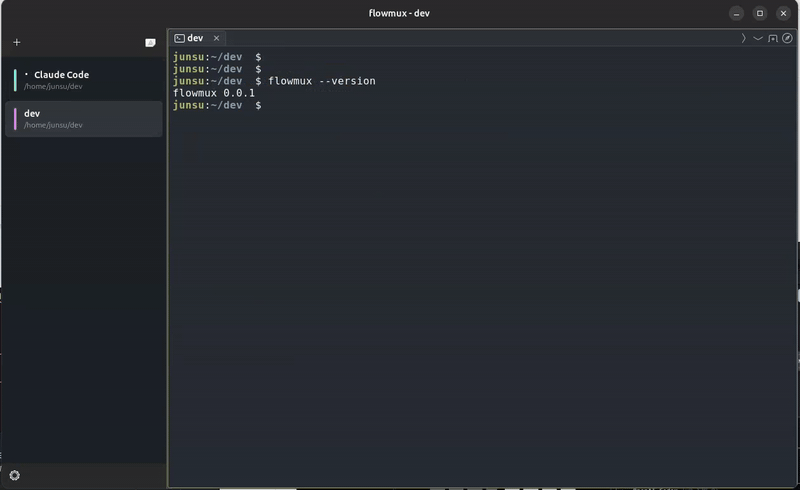
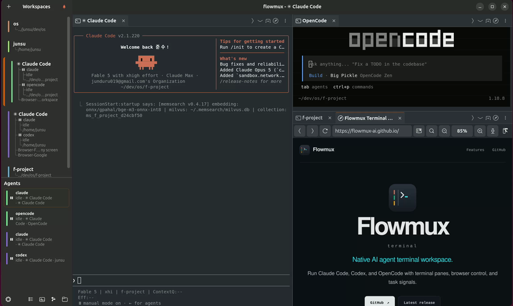
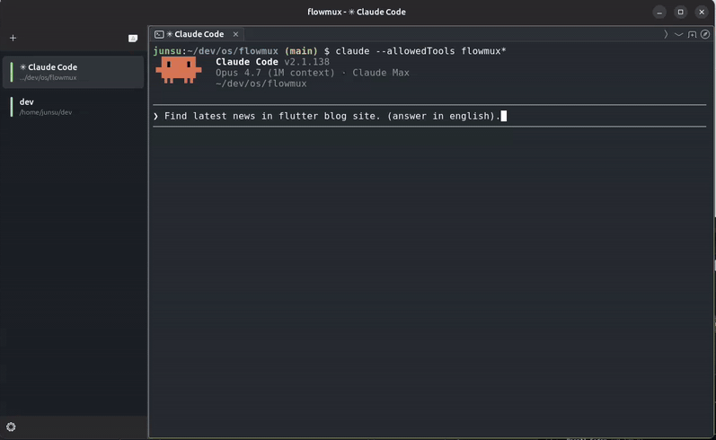
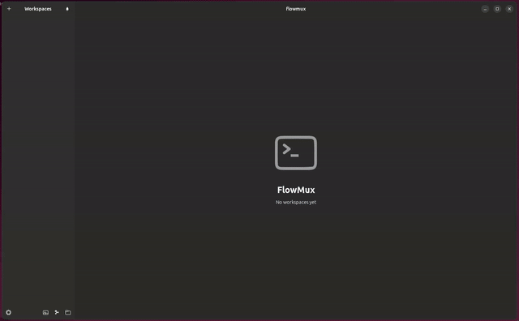
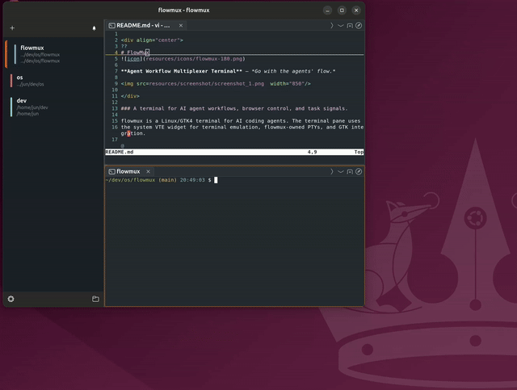

agent notifications
Agent notifications
Shows agent status and opens the workspace that sent the notification.
working → attention → done


terminal
Native AI agent terminal workspace.
Run Claude Code, Codex, and OpenCode with terminal and browser panes.
Open source · Native · GPL-3.0

features
Terminal, browser, file preview, and agent status tools.
agent notifications
Shows agent status and opens the workspace that sent the notification.
working → attention → done

browser control
Agents can open, inspect, and control browser pages through the Flowmux CLI.
flowmux browser snapshot

workspace layout
Split the workspace and arrange terminal and browser tabs in each pane.
pane + tab + workspace

file previews
Opens images, SVG, Lottie, and Markdown files in a pane.
image + animation + markdown

workspace
Git, session recovery, navigation, and browser state.
Lists, opens, inspects, and removes Git worktrees.
Restores layouts, terminal scrollback, tabs, and browser sessions.
Shows active agents and provides pane focus and stop controls.
Shows Claude account usage limits.
Stores browser history, permissions, and downloads.
Opens workspaces, panes, tabs, commands, and files.